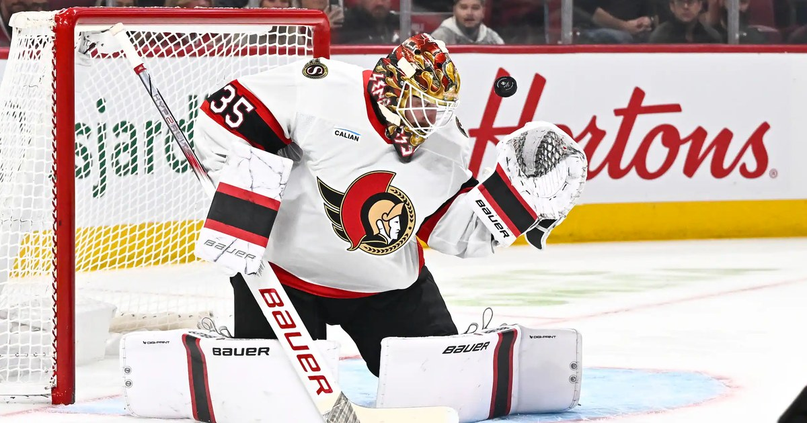

Linus Ullmark just did something no goalie in NHL history has ever done — twice
Linus Ullmark stopped 18 shots in Ottawa's 6-2 win over Tampa Bay on Friday, improving to 13-2 on the season — and becoming the first goaltender in NHL history to win at least 13 of his first 15 games in a season multiple times.

Disclosure: this post contains affiliate links. I earn a commission on qualifying purchases.
Nobody has ever done it twice. Now somebody has.
Linus Ullmark stopped 18 shots in the Ottawa Senators' 6-2 win over the Tampa Bay Lightning on Friday, and with the win he became the first goaltender in NHL history to win at least 13 of his first 15 games in a season multiple times.
Read that again. Not the first to do it once. The first to do it twice.
Ullmark has allowed two or fewer goals in 13 of his 15 starts this season. The Senators are rolling behind him, and the rest of the Atlantic is now chasing a team with a five-point lead at the top of the division.
He did this before — in his Vezina season
The reason the record says "multiple times" is that Ullmark already did this once. He started 13-1-0 through 15 games in 2022-23 with the Boston Bruins — the season he won the Vezina Trophy as the league's best goaltender, finishing 40-6-1 with a 1.89 goals-against average.
That was supposed to be the career year. The once-in-a-lifetime start. Three seasons later, in a different uniform, he has matched it — and now he owns the only repeat in league history.
Ullmark entered Friday at 12-2-0 with a 1.63 goals-against average and a .935 save percentage across 14 appearances. Wednesday had been the one crack in the armor: he surrendered four goals for the first time all season in a 5-3 loss to the Florida Panthers. Friday was the answer — 18 saves, two goals against, and a place in the record book that nobody else has ever reached twice.
The night in Tampa
Ottawa scored on its first shot of the game and never looked back. Ridly Greig opened the scoring at 3:37 of the first period with a side-angle shot from outside the left circle, and Tim Stutzle finished off a Michael Amadio pass for a short-handed goal at 12:47 to make it 2-0.
Amadio made it 3-0 at 6:20 of the second period, and Stutzle grabbed a rebound on an odd-man rush at 17:37 to make it 4-0. Artem Zub — scoring for the first time this season — and Claude Giroux scored 1:38 apart early in the third to stretch it to 6-0 before Jake Guentzel got Tampa Bay on the board twice.
Stutzle scored twice to bring his team-leading goal total to 15. Amadio finished with a goal and two assists, and Greig and Giroux each had a goal and an assist.
Tampa Bay, meanwhile, is sliding. The Lightning have lost three consecutive games in regulation and finished a six-game homestand 2-4 — after starting the season with eight consecutive wins at home. Dennis Hildeby stopped 15 of 21 shots in the Tampa net. The Lightning also placed forward Pontus Holmberg on injured reserve with a lower-body injury that will keep him out four weeks, while Ottawa welcomed back Andre Burakovsky after a 12-game absence.
What it means for Ottawa
The Senators have now won six of their last eight and opened up a five-point lead at the top of the Atlantic Division standings. They suffered their first regulation loss since November 1 on Wednesday in Florida. Friday was the response.
And the response came from the same place it has come from all season: the crease. Ullmark is 33 years old, in his second season in Ottawa, and playing the best hockey of his life — again.
The first time he started a season like this, he won the Vezina. The second time, he made history no other goalie has ever made. The question now is what the third act looks like — because nobody in NHL history has ever had to answer that one before.
Gear up: Fanatics